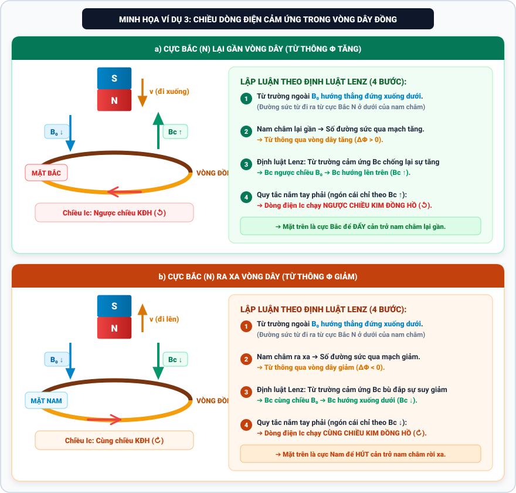
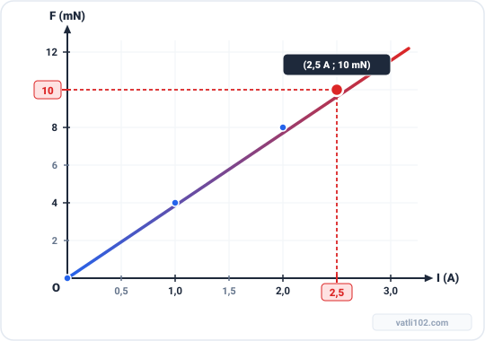

Bài 20: Bài Tập Về Từ Trường

Phương pháp giải bài tập từ trường: Thành thạo quy tắc bàn tay trái, định luật Lenz, công thức từ thông và đồ thị thực nghiệm
NỘI DUNG BÀI HỌC
1. Củng Cố Công Thức & Quy Tắc Cốt Lõi
1. Lực từ Ampère tác dụng lên đoạn dây dẫn mang dòng điện:
$$F = B \cdot I \cdot L \cdot \sin\theta$$- • $F$: Độ lớn lực từ tác dụng lên đoạn dây dẫn (đơn vị: Newton, kí hiệu $\text{N}$).
- • $B$: Cảm ứng từ của từ trường đều (đơn vị: Tesla, kí hiệu $\text{T}$).
- • $I$: Cường độ dòng điện chạy qua đoạn dây dẫn (đơn vị: Ampe, kí hiệu $\text{A}$).
- • $L$: Chiều dài của đoạn dây dẫn nằm trong vùng từ trường (đơn vị: mét, kí hiệu $\text{m}$).
- • $\theta = (\vec{B}, \vec{I})$: Góc hợp bởi hướng của đường cảm ứng từ và chiều dòng điện.
- • Khi $\theta = 90^\circ$ (dây dẫn đặt vuông góc với đường sức từ): $F_{\max} = B \cdot I \cdot L$.
- • Khi $\theta = 0^\circ$ hoặc $\theta = 180^\circ$ (dây dẫn đặt song song với đường sức từ): $F = 0$.
- • Quy tắc bàn tay trái: Đặt bàn tay trái duỗi thẳng sao cho các đường cảm ứng từ $\vec{B}$ đâm xuyên vào lòng bàn tay, chiều từ cổ tay đến ngón tay giữa chỉ chiều dòng điện $I$, ngón tay cái choãi ra $90^\circ$ chỉ chiều của lực từ $\vec{F}$.
2. Từ thông gửi qua diện tích phẳng của khung dây:
$$\Phi = B \cdot S \cdot \cos\theta \quad \text{hoặc cuộn } N \text{ vòng: } \Phi = N \cdot B \cdot S \cdot \cos\theta$$- • $\Phi$: Từ thông qua diện tích mặt phẳng khung dây (đơn vị: Weber, kí hiệu $\text{Wb}$; $1\text{ Wb} = 1\text{ T} \cdot 1\text{ m}^2$).
- • $S$: Diện tích của mặt phẳng giới hạn bởi khung dây (đơn vị: $\text{m}^2$).
- • $\theta = (\vec{n}, \vec{B})$: Góc hợp bởi vectơ pháp tuyến dương $\vec{n}$ của mặt phẳng khung dây và vectơ cảm ứng từ $\vec{B}$.
- • Lưu ý bẫy góc: Nếu đề bài cho góc $\alpha$ hợp bởi mặt phẳng khung dây và đường cảm ứng từ $\vec{B}$, ta có hệ thức liên hệ: $\theta = 90^\circ - \alpha$.
3. Suất điện động cảm ứng & Định luật Lenz:
$$|e_c| = \left| \frac{\Delta\Phi}{\Delta t} \right| \quad \text{hoặc} \quad |e_c| = N \cdot \left| \frac{\Delta\Phi}{\Delta t} \right|$$- • Định luật Lenz: Dòng điện cảm ứng xuất hiện trong mạch kín có chiều sao cho từ trường do nó sinh ra có tác dụng chống lại sự biến thiên của từ thông qua mạch.
- • Khi từ thông qua mạch tăng ($\Delta\Phi > 0$): Từ trường cảm ứng $\vec{B}_c$ có chiều ngược chiều với từ trường ngoài $\vec{B}$ ($\vec{B}_c \uparrow\downarrow \vec{B}$).
- • Khi từ thông qua mạch giảm ($\Delta\Phi < 0$): Từ trường cảm ứng $\vec{B}_c$ có chiều cùng chiều với từ trường ngoài $\vec{B}$ ($\vec{B}_c \uparrow\uparrow \vec{B}$).
- • Quy tắc nắm tay phải: Khum bàn tay phải sao cho ngón tay cái choãi ra chỉ theo chiều của từ trường cảm ứng $\vec{B}_c$, chiều khum của bốn ngón tay còn lại chỉ chiều của dòng điện cảm ứng $I_c$ trong khung dây.
2. Các Dạng Bài Tập Điển Hình & Lời Giải Chi Tiết
Phương pháp giải: Xác định các đại lượng $B, I, L$ theo đơn vị chuẩn SI ($\text{T}, \text{A}, \text{m}$). Xác định chính xác góc $\theta = (\vec{B}, \vec{I})$. Áp dụng công thức $F = BIL\sin\theta$ và quy tắc bàn tay trái để tìm hướng của vectơ lực từ $\vec{F}$.
Ví dụ 1 (Tính độ lớn lực từ trên đoạn dây thẳng):
Một đoạn dây dẫn thẳng dài $L = 0{,}8\text{ m}$ mang dòng điện $I = 10\text{ A}$ được đặt trong từ trường đều có cảm ứng từ $B = 0{,}5\text{ T}$. Tính độ lớn của lực từ tác dụng lên đoạn dây dẫn trong hai trường hợp sau:
a) Đoạn dây dẫn đặt vuông góc với các đường cảm ứng từ.
b) Đoạn dây dẫn hợp với các đường cảm ứng từ một góc $\theta = 30^\circ$.
💡 Lời giải chi tiết:
a) Khi đoạn dây dẫn đặt vuông góc với các đường cảm ứng từ:
Ta có góc $\theta = 90^\circ \implies \sin90^\circ = 1$. Độ lớn lực từ tác dụng lên đoạn dây dẫn đạt giá trị cực đại:
$$F_1 = B \cdot I \cdot L \cdot \sin90^\circ = 0{,}5 \cdot 10 \cdot 0{,}8 \cdot 1 = \mathbf{4\text{ N}}.$$b) Khi đoạn dây dẫn hợp với các đường cảm ứng từ một góc $\theta = 30^\circ$:
Ta có $\sin30^\circ = 0{,}5$. Độ lớn lực từ tác dụng lên đoạn dây dẫn là:
$$F_2 = B \cdot I \cdot L \cdot \sin30^\circ = 0{,}5 \cdot 10 \cdot 0{,}8 \cdot 0{,}5 = \mathbf{2\text{ N}}.$$Đáp số: a) $4\text{ N}$; b) $2\text{ N}$.
Ví dụ 2 (Khung dây mang dòng điện trong từ trường - Bài 1 trang 88 SGK):
Một khung dây dẫn hình chữ nhật $ACDE$ mang dòng điện $I$ đặt trong một từ trường đều $\vec{B}$ sao cho mặt phẳng khung dây song song với các đường cảm ứng từ. Cho biết hai cạnh $AC$ và $DE$ song song với các đường cảm ứng từ, hai cạnh $CD$ và $EA$ vuông góc với các đường cảm ứng từ. Hãy xác định đặc điểm của lực từ tác dụng lên từng cạnh của khung dây và dự đoán hiện tượng xảy ra với khung dây.
💡 Lời giải chi tiết:
• Xét hai cạnh song song $AC$ và $DE$:
Vì hai cạnh này chạy song song với các đường cảm ứng từ nên góc hợp bởi chiều dòng điện và vectơ cảm ứng từ là $\theta = 0^\circ$ hoặc $\theta = 180^\circ \implies \sin\theta = 0$. Do đó, lực từ tác dụng lên hai cạnh $AC$ và $DE$ triệt tiêu hoàn toàn:
$$F_{AC} = F_{DE} = 0.$$• Xét hai cạnh vuông góc $CD$ và $EA$:
Vì hai cạnh này vuông góc với các đường cảm ứng từ nên góc $\theta = 90^\circ \implies \sin90^\circ = 1$. Lực từ tác dụng lên mỗi cạnh có độ lớn cực đại:
$$F_{CD} = F_{EA} = B \cdot I \cdot L.$$• Xác định hướng và chuyển động của khung dây:
Áp dụng quy tắc bàn tay trái cho hai cạnh $CD$ và $EA$, ta thấy lực từ tác dụng lên hai cạnh đối diện này có phương thẳng đứng (vuông góc với mặt phẳng khung dây), cùng độ lớn nhưng ngược chiều nhau và có giá không trùng nhau. Cặp lực này tạo thành một ngẫu lực làm khung dây quay quanh trục đối xứng dọc nằm trong mặt phẳng khung. Đây chính là nguyên lý vận hành cốt lõi của động cơ điện một chiều.
Phương pháp giải (Quy trình 4 bước):
1. Xác định hướng của từ trường ngoài $\vec{B}$ (nguyên tắc: đường sức từ đi ra từ cực Bắc N, đi vào cực Nam S của nam châm).
2. Xác định từ thông $\Phi$ gửi qua khung dây tăng hay giảm (nam châm lại gần $\implies \Phi$ tăng; nam châm ra xa $\implies \Phi$ giảm).
3. Xác định hướng của từ trường cảm ứng $\vec{B}_c$ theo định luật Lenz:
+ Nếu $\Phi$ tăng $\implies \vec{B}_c$ ngược chiều với $\vec{B}$ ngoài để chống lại sự tăng.
+ Nếu $\Phi$ giảm $\implies \vec{B}_c$ cùng chiều với $\vec{B}$ ngoài để bù đắp sự giảm.
4. Áp dụng quy tắc nắm tay phải để xác định chiều của dòng điện cảm ứng $I_c$ chạy trong khung dây.
Ví dụ 3 (Tương tác nam châm và khung dây kín - Bài 2 trang 88 SGK):
Một khung dây dẫn tròn kín bằng đồng được treo tự do trong không gian. Hãy xác định chiều của dòng điện cảm ứng xuất hiện trong khung dây dẫn khi:
a) Đưa cực Bắc (N) của một thanh nam châm thẳng lại gần khung dây.
b) Đưa cực Bắc (N) của thanh nam châm thẳng ra xa khung dây.

Hình 20.1: Xác định chiều dòng điện cảm ứng theo định luật Lenz khi cực Bắc nam châm lại gần và ra xa vòng dây.
💡 Lời giải chi tiết:
• Đặc điểm từ trường ngoài: Các đường cảm ứng từ $\vec{B}$ của thanh nam châm đi ra ở cực Bắc (N), do đó vectơ từ trường ngoài $\vec{B}$ hướng từ nam châm đi xuyên vào mặt khung dây.
• Trường hợp a) Đưa cực Bắc (N) lại gần khung dây:
- Khi thanh nam châm lại gần, từ trường qua khung dây mạnh lên, làm cho từ thông $\Phi$ gửi qua khung dây tăng ($\Delta\Phi > 0$).
- Theo định luật Lenz, từ trường cảm ứng $\vec{B}_c$ sinh ra phải chống lại sự tăng này, do đó $\vec{B}_c$ hướng ngược chiều với từ trường ngoài $\vec{B}$ (hướng từ khung dây đẩy ngược về phía nam châm).
- Áp dụng quy tắc nắm tay phải (ngón cái choãi ra chỉ theo chiều $\vec{B}_c$): Dòng điện cảm ứng $I_c$ chạy trong khung dây theo chiều ngược chiều kim đồng hồ (khi nhìn từ phía thanh nam châm vào khung dây).
• Trường hợp b) Đưa cực Bắc (N) ra xa khung dây:
- Khi thanh nam châm ra xa, từ thông gửi qua khung dây giảm ($\Delta\Phi < 0$).
- Theo định luật Lenz, từ trường cảm ứng $\vec{B}_c$ sinh ra phải chống lại sự giảm này, do đó $\vec{B}_c$ hướng cùng chiều với từ trường ngoài $\vec{B}$ để bù đắp sự suy giảm.
- Áp dụng quy tắc nắm tay phải: Dòng điện cảm ứng $I_c$ chạy theo chiều thuận chiều kim đồng hồ (khi nhìn từ phía thanh nam châm vào khung dây).
Phương pháp giải: Đổi diện tích $S$ ra đơn vị $\text{m}^2$ ($1\text{ cm}^2 = 10^{-4}\text{ m}^2$, $1\text{ mm}^2 = 10^{-6}\text{ m}^2$). Phân biệt góc $\alpha$ (mặt phẳng khung và $\vec{B}$) và góc $\theta = (\vec{n}, \vec{B}) = 90^\circ - \alpha$. Áp dụng công thức $\Phi = NBS\cos\theta$ và $|e_c| = N \left| \frac{\Delta\Phi}{\Delta t} \right|$.
Ví dụ 4 (Tính từ thông qua khung dây - Bài 3 trang 88 SGK):
Một vòng dây dẫn diện tích $S = 40\text{ cm}^2$ đặt trong một từ trường đều có cảm ứng từ $B = 0{,}1\text{ T}$. Hãy tính từ thông gửi qua diện tích mặt phẳng vòng dây trong hai trường hợp sau:
a) Mặt phẳng vòng dây đặt vuông góc với các đường cảm ứng từ.
b) Mặt phẳng vòng dây hợp với các đường cảm ứng từ một góc $\alpha = 30^\circ$.
💡 Lời giải chi tiết:
Đổi diện tích sang đơn vị chuẩn $\text{m}^2$: $S = 40\text{ cm}^2 = 40 \cdot 10^{-4}\text{ m}^2 = 4 \cdot 10^{-3}\text{ m}^2$.
a) Mặt phẳng vòng dây vuông góc với các đường cảm ứng từ:
Khi đó vectơ pháp tuyến $\vec{n}$ song song với $\vec{B} \implies \theta = 0^\circ \implies \cos0^\circ = 1$. Từ thông gửi qua vòng dây đạt giá trị cực đại:
$$\Phi_1 = B \cdot S \cdot \cos0^\circ = 0{,}1 \cdot (4 \cdot 10^{-3}) \cdot 1 = 4 \cdot 10^{-4}\text{ Wb} = \mathbf{0{,}4\text{ mWb}}.$$b) Mặt phẳng vòng dây hợp với từ trường một góc $\alpha = 30^\circ$:
Vì vectơ pháp tuyến $\vec{n}$ vuông góc với mặt phẳng vòng dây nên góc $\theta$ hợp bởi pháp tuyến $\vec{n}$ và từ trường $\vec{B}$ là:
$$\theta = 90^\circ - \alpha = 90^\circ - 30^\circ = 60^\circ.$$Từ thông gửi qua diện tích vòng dây là:
$$\Phi_2 = B \cdot S \cdot \cos60^\circ = 0{,}1 \cdot (4 \cdot 10^{-3}) \cdot 0{,}5 = 2 \cdot 10^{-4}\text{ Wb} = \mathbf{0{,}2\text{ mWb}}.$$Đáp số: a) $0{,}4\text{ mWb}$; b) $0{,}2\text{ mWb}$.
Ví dụ 5 (Tính độ biến thiên từ thông và suất điện động cảm ứng):
Một khung dây phẳng gồm $N = 100$ vòng dây, mỗi vòng có diện tích $S = 20\text{ cm}^2$, đặt vuông góc với từ trường đều $B = 0{,}2\text{ T}$. Trong khoảng thời gian $\Delta t = 0{,}05\text{ s}$, người ta quay đều khung dây một góc $90^\circ$ để mặt phẳng khung dây trở nên song song với các đường cảm ứng từ.
a) Xác định độ biến thiên từ thông $\Delta\Phi$ qua một vòng dây.
b) Tính độ lớn suất điện động cảm ứng $|e_c|$ xuất hiện trong toàn bộ khung dây.
💡 Lời giải chi tiết:
Đổi diện tích sang đơn vị chuẩn $\text{m}^2$: $S = 20\text{ cm}^2 = 2 \cdot 10^{-3}\text{ m}^2$.
a) Độ biến thiên từ thông qua một vòng dây:
- Ở vị trí ban đầu (mặt phẳng khung vuông góc $\vec{B}$): $\theta_1 = 0^\circ \implies \Phi_1 = B \cdot S \cdot \cos0^\circ = 0{,}2 \cdot (2 \cdot 10^{-3}) \cdot 1 = 4 \cdot 10^{-4}\text{ Wb}$.
- Ở vị trí sau (mặt phẳng khung song song $\vec{B}$): $\theta_2 = 90^\circ \implies \Phi_2 = B \cdot S \cdot \cos90^\circ = 0$.
- Độ biến thiên từ thông qua một vòng dây:
$$\Delta\Phi = \Phi_2 - \Phi_1 = 0 - 4 \cdot 10^{-4}\text{ Wb} = -4 \cdot 10^{-4}\text{ Wb}.$$b) Độ lớn suất điện động cảm ứng trong toàn khung dây ($N = 100$ vòng):
$$|e_c| = N \cdot \left| \frac{\Delta\Phi}{\Delta t} \right| = 100 \cdot \left| \frac{-4 \cdot 10^{-4}\text{ Wb}}{0{,}05\text{ s}} \right| = 100 \cdot (8 \cdot 10^{-3}) = \mathbf{0{,}8\text{ V}}.$$Đáp số: a) $|\Delta\Phi| = 4 \cdot 10^{-4}\text{ Wb}$; b) $|e_c| = 0{,}8\text{ V}$.
Phương pháp giải: Khi đoạn dây dẫn đặt vuông góc với từ trường đều ($\theta = 90^\circ$), định luật Ampère có dạng $F = BIL = k \cdot I$ với hệ số góc $k = B \cdot L$. Đồ thị thực nghiệm biểu diễn $F$ theo $I$ là đường thẳng đi qua gốc toạ độ $O(0, 0)$. Hệ số góc (độ dốc) của đồ thị: $k = \frac{\Delta F}{\Delta I} = B \cdot L \implies B = \frac{k}{L}$.
Ví dụ 6 (Xác định cảm ứng từ $B$ từ đồ thị thực nghiệm - Bài 4 trang 88 SGK):
Trong thí nghiệm khảo sát lực từ tác dụng lên đoạn dây dẫn thẳng mang dòng điện, một đoạn dây dẫn thẳng có chiều dài $L = 10\text{ cm} = 0{,}1\text{ m}$ được đặt vuông góc với các đường cảm ứng từ của một từ trường đều. Đồ thị thực nghiệm khảo sát lực từ $F\text{ (mN)}$ phụ thuộc vào cường độ dòng điện $I\text{ (A)}$ là một đường thẳng đi qua gốc toạ độ $O(0, 0)$ và đi qua điểm có toạ độ $(I = 2{,}5\text{ A}; F = 10\text{ mN})$ như Hình 20.2.
a) Xác định hệ số góc $k$ của đường thẳng thực nghiệm.
b) Xác định độ lớn cảm ứng từ $B$ của từ trường này (theo đơn vị $\text{T}$ và $\text{mT}$).

Hình 20.2: Đồ thị thực nghiệm khảo sát lực từ $F\text{ (mN)}$ theo cường độ dòng điện $I\text{ (A)}$.
💡 Lời giải chi tiết:
a) Xác định hệ số góc $k$ của đường thẳng:
Vì đường thẳng đi qua gốc toạ độ $O(0, 0)$ và điểm $(I = 2{,}5\text{ A}; F = 10\text{ mN} = 10 \cdot 10^{-3}\text{ N})$, hệ số góc $k$ của đồ thị là:
$$k = \frac{\Delta F}{\Delta I} = \frac{10 \cdot 10^{-3}\text{ N}}{2{,}5\text{ A}} = 4 \cdot 10^{-3}\text{ N/A} = \mathbf{4\text{ mN/A}}.$$b) Xác định độ lớn cảm ứng từ $B$:
Vì dây dẫn đặt vuông góc với từ trường ($\theta = 90^\circ \implies \sin90^\circ = 1$) nên:
$$F = B \cdot L \cdot I \implies k = B \cdot L \implies B = \frac{k}{L}.$$Thay số với $k = 4 \cdot 10^{-3}\text{ N/A}$ và $L = 0{,}1\text{ m}$:
$$B = \frac{4 \cdot 10^{-3}\text{ N/A}}{0{,}1\text{ m}} = 4 \cdot 10^{-2}\text{ T} = 0{,}04\text{ T} = \mathbf{40\text{ mT}}.$$Đáp số: a) $k = 4\text{ mN/A}$; b) $B = 40\text{ mT} = 0{,}04\text{ T}$.
📌 Lực từ Ampère: $F = B I L \sin\theta$. Luôn dùng quy tắc bàn tay trái để tìm hướng của lực từ; ngẫu lực tác dụng lên khung dây làm khung quay là nguyên lý động cơ điện.
📌 Định luật Lenz: Dòng điện cảm ứng sinh ra từ trường cảm ứng $\vec{B}_c$ chống lại sự biến thiên của từ thông qua mạch ($\Phi$ tăng thì $\vec{B}_c \uparrow\downarrow \vec{B}$; $\Phi$ giảm thì $\vec{B}_c \uparrow\uparrow \vec{B}$).
📌 Từ thông $\Phi$: $\Phi = B S \cos\theta$ với góc $\theta = (\vec{n}, \vec{B}) = 90^\circ - \alpha$ ($\alpha$ là góc giữa mặt phẳng khung và $\vec{B}$).
📌 Đồ thị thực nghiệm $F(I)$: Là đường thẳng đi qua gốc toạ độ có hệ số góc $k = B \cdot L \cdot \sin\theta$. Khi đặt vuông góc, $B = \frac{k}{L}$.